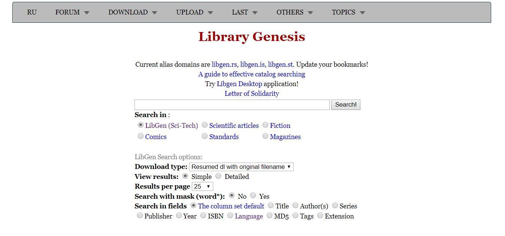
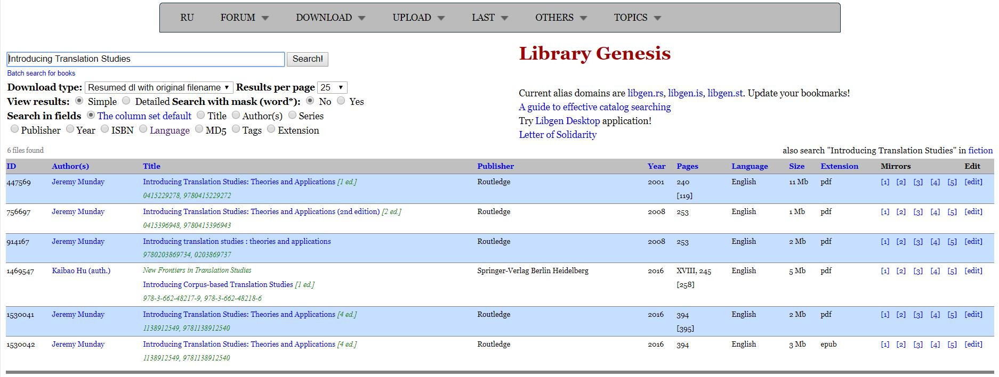
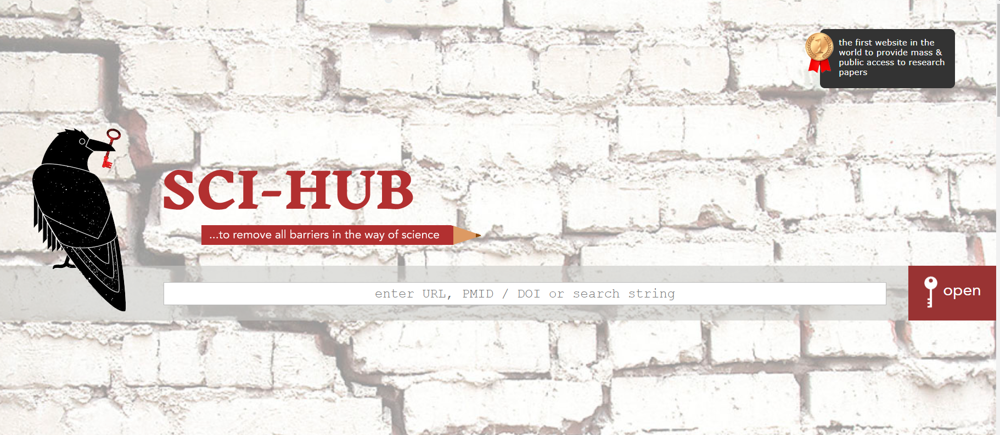
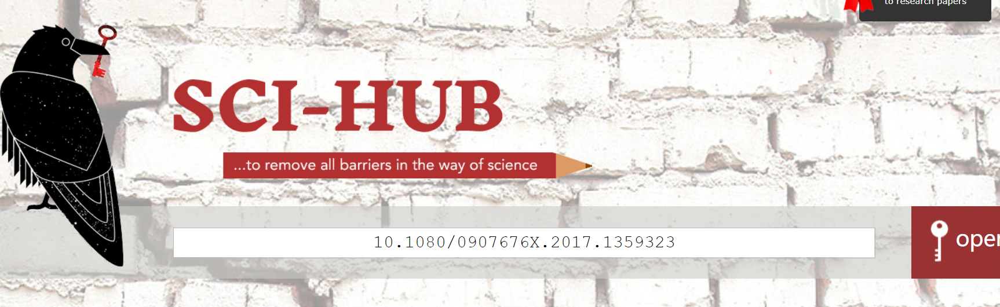
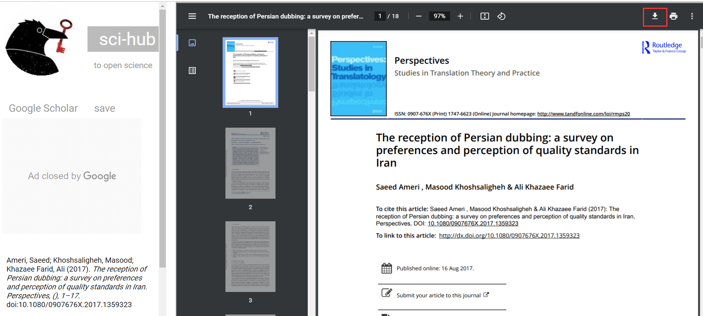

1. Library Genesis→
简介
Library Genesis号称是帮助全人类知识无版权传播计划，拥有80多万本海量图书资源，且很多著作都是难以购买的，也提供海量论文下载服务。该网站网页体验较好，无需注册，无广告，下载方法简单，直接输入书名/论文题目/ISBN码/DOI码即可。
网站首页
搜索结果页
下载页
Library Genesis提供的下载方式很多，此处推荐选用Z-library，因为界面更舒适，转换功能更强大，在下面我们还会详细介绍。

2. Z-library→
简介
Z-Library是一个免费电子书籍搜索下载网站，成立于2009年，目前收录超过35万本电子书籍，主要是英文原版的电子书籍，读者可以根据关键词来搜索，也可以通过ISBN码搜索，另外也提供了下载历史记录以方便查看。ZLibrary还被称为是世界上最大的免费图书馆（有点跟Library Genesis开始battle的意思了哈哈哈）。在这里，所有的书籍都提供了书籍的详细信息，可以让你全方位的了解每一本书籍。
网站首页

搜索结果页

下载及转换页
个人喜欢Z-library的一个重要原因就是其便捷的格式转换功能，而且还提供send-to-kindle服务，可以说是非常贴心了。

3. Sci-hub→
简介
Sci-hub是世界上第一款提供大众和公众访问科研论文的网站，由Alexandra Elbakyan创立，其口号是“removing barriers in the way of science”。该网站几乎可以下载任意SCI全文文献，只要输入文献的标题、或链接、或DOI、或PubMed号，就可以下载文献全文，简单快速到令人难以想象；而且不需要购买任何数据库的权限，完全免费。
网站首页
输入DOI号即可迅速打开并下载所需论文
 不过，虽然Sci-hub给广大科研工作者带来了极大便利，却也因为版权问题时常面临被起诉的风险，所以网址经常会有变更。在这里给大家推荐Sci-hub可用链接的查询网站，可实时查询网址的可用性。